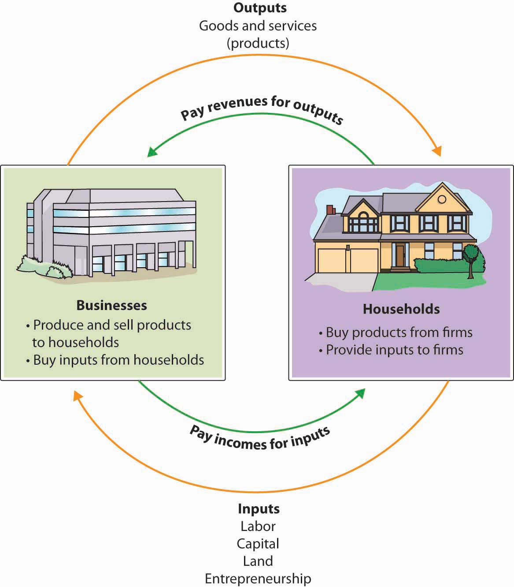
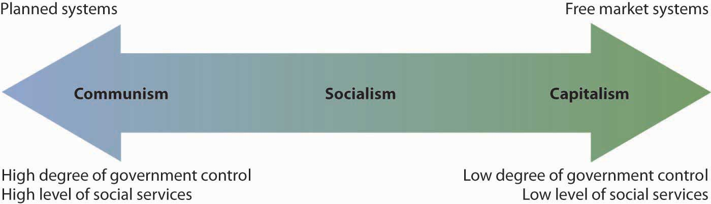
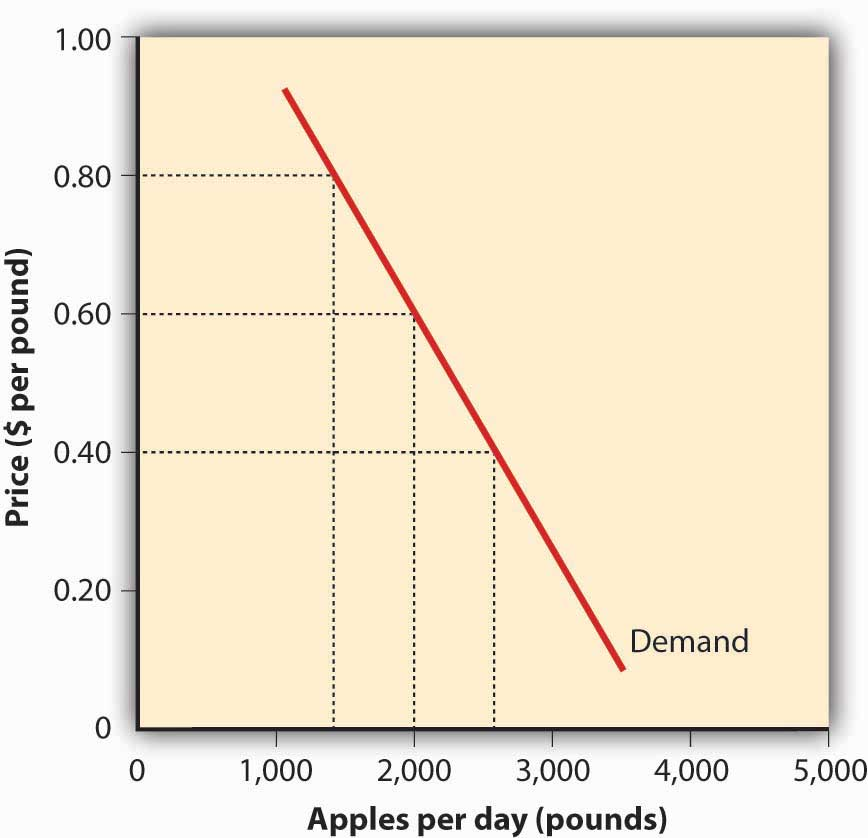
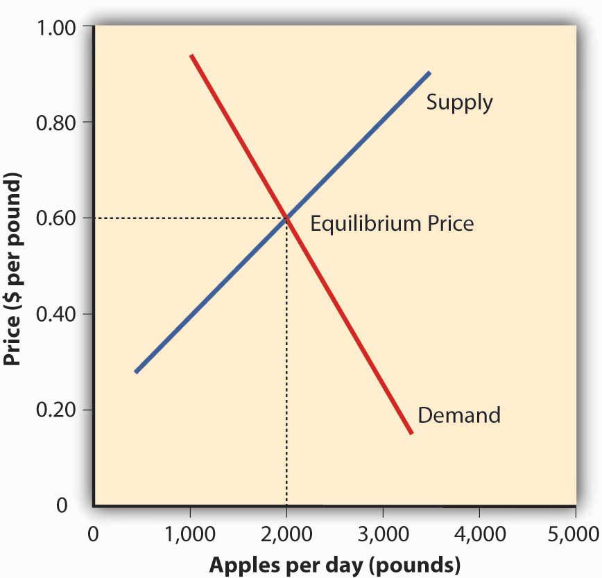
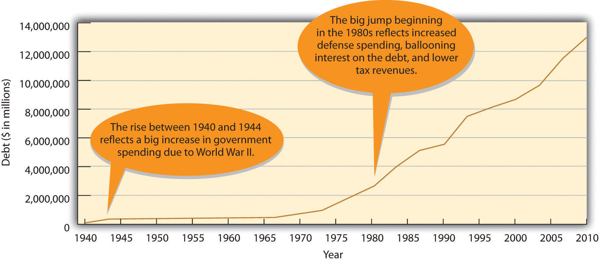

In 1976 Steve Jobs and Steve Wozniak created their first computer, the Apple I.This vignette is based on an honors thesis written by Danielle M. Testa, “Apple, Inc.: An Analysis of the Firm’s Tumultuous History, in Conjunction with the Abounding Future” (Lehigh University), November 18, 2007. They invested a mere $1,300 and set up business in Jobs’s garage. Three decades later, their business—Apple Inc.—has become one of the world’s most influential and successful companies. Did you ever wonder why Apple flourished while so many other young companies failed? How did it grow from a garage start-up to a company generating $65 billion in sales? How was it able to transform itself from a nearly bankrupt firm to a multinational corporation with locations all around the world? You might conclude that it was the company’s products, such as the Apple I and II, the Macintosh, or more recently its wildly popular iPod, iPhone, and iPad. Or you might decide that it was its people: its dedicated employees and loyal customers. Perhaps you will decide it was luck—Apple simply was in the right place at the right time. Or maybe you will attribute the company’s success to management’s willingness to take calculated risks. Perhaps you will attribute Apple’s initial accomplishments and reemergence to its cofounder, the late Steve Jobs. After all, Jobs was instrumental in the original design of the Apple I and, after being ousted from his position with the company, returned to save the firm from destruction and lead it onto its current path.
Before we decide what made Apple what it is today and what will propel it into a successful future, let’s see if you have all the facts about the possible choices: its products, its customers, luck, willingness to take risks, or Steve Jobs. We’re confident that you’re aware of Apple’s products and understand that “Apple customers are a loyal bunch. Though they’re only a small percentage of all computer users, they make up for it with their passion and outspokenness.”Ellen Lee, “Faithful, sometimes fanatical Apple customers continue to push the boundaries of loyalty,” San Francisco Chronicle, March 26, 2006. We believe you can understand the role that luck or risk taking could play in Apple’s success. But you might like to learn more about Steve Jobs, the company’s cofounder and former CEO, before arriving at your final decision.
Growing up, Jobs had an interest in computers. He attended lectures at Hewlett-Packard after school and worked for the company during the summer months. He took a job at Atari after graduating from high school and saved his money to make a pilgrimage to India to search for spiritual enlightenment. Following his India trip, he attended Steve Wozniak’s “Homebrew Computer Club” meetings, where the idea for building a personal computer surfaced.Lee Angelelli, “Steve Paul Jobs,” http://ei.cs.vt.edu/~history/Jobs.html (accessed January 21, 2012). “Many colleagues describe Jobs as a brilliant man who could be a great motivator and positively charming. At the same time his drive for perfection was so strong that employees who did not meet his demands are faced with blistering verbal attacks.”Lee Angelelli, “Steve Paul Jobs,” http://ei.cs.vt.edu/~history/Jobs.html (accessed January 21, 2012). Not everyone at Apple appreciated Jobs’s brilliance and ability to motivate. Nor did they all go along with his willingness to do whatever it took to produce an innovative, attractive, high-quality product. So at age thirty, Jobs found himself ousted from Apple by John Sculley, whom Jobs himself had hired as president of the company several years earlier. It seems that Sculley wanted to cut costs and thought it would be easier to do so without Jobs around. Jobs sold $20 million of his stock and went on a two-month vacation to figure out what he would do for the rest of his life. His solution: start a new personal computer company called NextStep. In 1993, he was invited back to Apple (a good thing, because neither his new company nor Apple was doing well).
Steve Jobs was definitely not humble, but he was a visionary and had a right to be proud of his accomplishments. Some have commented that “Apple’s most successful days have occurred with Steve Jobs at the helm.”Cyrus Farivar, “Apple’s first 30 years; three decades of contributions to the computer industry,” Macworld, June 2006, 2. Jobs did what many successful CEOs and managers do: he learned, adjusted, and improvised.Dan Barkin, “He made the iPod: How Steve Jobs of Apple created the new millennium’s signature invention,” Knight Ridder Tribune Business News, December 3, 2006, 1. Perhaps the most important statement that can be made about him is this: he never gave up on the company that once turned its back on him. So now you have the facts. Here’s a multiple-choice question that you’ll likely get right: Apple’s success is due to (a) its products, (b) its customers, (c) luck, (d) willingness to take risks, (e) Steve Jobs, or (f) some combination of these options.
As the story of Apple suggests, today is an interesting time to study business. Advances in technology are bringing rapid changes in the ways we produce and deliver goods and services. The Internet and other improvements in communication (such as smartphones, video conferencing, and social networking) now affect the way we do business. Companies are expanding international operations, and the workforce is more diverse than ever. Corporations are being held responsible for the behavior of their executives, and more people share the opinion that companies should be good corporate citizens. Plus—and this is a big plus—businesses today are facing the lingering effects of what many economists believe is the worst financial crisis since the Great Depression.Jon Hilsenrath, Serena Ng, and Damian Paletta, “Worst Crisis Since ’30s, With No End Yet in Sight,” Wall Street Journal, Markets, September 18, 2008, http://online.wsj.com/article/SB122169431617549947.html (accessed January 21, 2012). Economic turmoil that began in the housing and mortgage industries as a result of troubled subprime mortgages quickly spread to the rest of the economy. In 2008, credit markets froze up and banks stopped making loans. Lawmakers tried to get money flowing again by passing a $700 billion Wall Street bailout, yet businesses and individuals were still denied access to needed credit. Without money or credit, consumer confidence in the economy dropped and consumers cut back their spending. Businesses responded by producing fewer products, and their sales and profits dropped. Unemployment rose as troubled companies shed the most jobs in five years, and 760,000 Americans marched to the unemployment lines.“How the Economy Stole the Election,” CNN.com, http://money.cnn.com/galleries/2008/news/0810/gallery.economy_election/index.html (accessed January 21, 2012). The stock market reacted to the financial crisis and its stock prices dropped by 44 percent while millions of Americans watched in shock as their savings and retirement accounts took a nose dive. In fall 2008, even Apple, a company that had enjoyed strong sales growth over the past five years, began to cut production of its popular iPhone. Without jobs or cash, consumers would no longer flock to Apple’s fancy retail stores or buy a prized iPhone.Dan Gallagher, “Analyst says Apple is cutting back production as economy weakens,” MarketWatch, November 3, 2008, http://www.marketwatch.com/news/story/apple-cutting-back-iphone-production/story.aspx?guid=%7B7F2B6F99-D063-4005-87AD-D8C36009F29B%7D&dist=msr_1 (accessed January 21, 2012). Things have turned around for Apple, which reported blockbuster sales for 2011 in part because of strong customer response to the iPhone 4S. But not all companies or individuals are doing so well. The economy is still struggling, unemployment is high (particularly for those ages 16 to 24), and home prices remain low.
As you go through the course with the aid of this text, you’ll explore the exciting world of business. We’ll introduce you to the various activities in which businesspeople engage—accounting, finance, information technology, management, marketing, and operations. We’ll help you understand the roles that these activities play in an organization, and we’ll show you how they work together. We hope that by exposing you to the things that businesspeople do, we’ll help you decide whether business is right for you and, if so, what areas of business you’d like to study further.
A businessActivity that provides goods or services to consumers for the purpose of making a profit. is any activity that provides goods or services to consumers for the purpose of making a profit. When Steve Jobs and Steve Wozniak created Apple Computer in Jobs’s family garage, they started a business. The product was the Apple I, and the company’s founders hoped to sell their computers to customers for more than it cost to make and market them. If they were successful (which they were), they’d make a profitDifference between the revenue that a company brings in from selling goods and services and the costs of generating this revenue..
Before we go on, let’s make a couple of important distinctions concerning the terms in our definitions. First, whereas Apple produces and sells goods (Mac, iPhone, iPod, iPad), many businesses provide services. Your bank is a service company, as is your Internet provider. Hotels, airlines, law firms, movie theaters, and hospitals are also service companies. Many companies provide both goods and services. For example, your local car dealership sells goods (cars) and also provides services (automobile repairs).
Second, some organizations are not set up to make profits. Many are established to provide social or educational services. Such not-for-profit (or nonprofit) organizationsOrganization that has a purpose other than returning profits to owners. include the United Way of America, Habitat for Humanity, the Boys and Girls Clubs, the Sierra Club, the American Red Cross, and many colleges and universities. Most of these organizations, however, function in much the same way as a business. They establish goals and work to meet them in an effective, efficient manner. Thus, most of the business principles introduced in this text also apply to nonprofits.
Let’s begin our discussion of business by identifying the main participants of business and the functions that most businesses perform. Then we’ll finish this section by discussing the external factors that influence a business’s activities.
Every business must have one or more owners whose primary role is to invest money in the business. When a business is being started, it’s generally the owners who polish the business idea and bring together the resources (money and people) needed to turn the idea into a business. The owners also hire employees to work for the company and help it reach its goals. Owners and employees depend on a third group of participants—customers. Ultimately, the goal of any business is to satisfy the needs of its customers in order to generate a profit for the owners.
The activities needed to operate a business can be divided into a number of functional areas: management, operations, marketing, accounting, and finance. Let’s briefly explore each of these areas.
Managers are responsible for the work performance of other people. ManagementProcess of planning for, organizing, directing, and controlling a company’s resources so that it can achieve its goals. involves planning for, organizing, staffing, directing, and controlling a company’s resources so that it can achieve its goals. Managers plan by setting goals and developing strategies for achieving them. They organize activities and resources to ensure that company goals are met. They staff the organization with qualified employees and direct them to accomplish organizational goals. Finally, managers design controls for assessing the success of plans and decisions and take corrective action when needed.
All companies must convert resources (labor, materials, money, information, and so forth) into goods or services. Some companies, such as Apple, convert resources into tangible products—Macs, iPhones, iPods, iPads. Others, such as hospitals, convert resources into intangible products—health care. The person who designs and oversees the transformation of resources into goods or services is called an operations managerPerson who designs and oversees the process that converts resources into goods or services.. This individual is also responsible for ensuring that products are of high quality.
MarketingMarketing is the activity, set of institutions, and processes for creating, communicating, delivering, and exchanging offerings that have value for customers, clients, partners, and society at large. consists of everything that a company does to identify customers’ needs and designs products to meet those needs. Marketers develop the benefits and features of products, including price and quality. They also decide on the best method of delivering products and the best means of promoting them to attract and keep customers. They manage relationships with customers and make them aware of the organization’s desire and ability to satisfy their needs.
Managers need accurate, relevant, timely financial information, and accountants provide it. AccountantsFinancial advisor responsible for measuring, summarizing, and communicating financial and managerial information. measure, summarize, and communicate financial and managerial information and advise other managers on financial matters. There are two fields of accounting. Financial accountants prepare financial statements to help users, both inside and outside the organization, assess the financial strength of the company. Managerial accountants prepare information, such as reports on the cost of materials used in the production process, for internal use only.
FinanceActivities involved in planning for, obtaining, and managing a company’s funds. involves planning for, obtaining, and managing a company’s funds. Finance managers address such questions as the following: How much money does the company need? How and where will it get the necessary money? How and when will it pay the money back? What should it do with its funds? What investments should be made in plant and equipment? How much should be spent on research and development? How should excess funds be invested? Good financial management is particularly important when a company is first formed, because new business owners usually need to borrow money to get started.
Figure 1.2 Business and Its Environment

Apple and other businesses don’t operate in a vacuum: they’re influenced by a number of external factors. These include the economy, government, consumer trends, and public pressure to act as good corporate citizens. Figure 1.2 "Business and Its Environment" sums up the relationship among the participants in a business, its functional areas, and the external forces that influence its activities. One industry that’s clearly affected by all these factors is the fast-food industry. A strong economy means people have more money to eat out at places where food standards are monitored by a government agency, the Food and Drug Administration. Preferences for certain types of foods are influenced by consumer trends (eating fried foods might be OK one year and out the next). Finally, a number of decisions made by the industry result from its desire to be a good corporate citizen. For example, several fast-food chains have responded to environmental concerns by eliminating Styrofoam containers.David Baron, “Facing-Off in Public,” Stanford Business, April 15, 2006, http://www.gsb.stanford.edu/news/bmag/sbsm0308/feature_face_off.shtml (accessed January 21, 2012). As you move through this text, you’ll learn more about these external influences on business. (Section 1.3 "What Is Economics?" will introduce in detail one of these external factors—the economy.)
The activities needed to run a business can be divided into five functional areas:
The Martin family has been making guitars out of its factory in Nazareth, Pennsylvania, factory for more than 150 years. In 2004, Martin Guitar was proud to produce its millionth instrument. Go to http://www.martinguitar.com to link to the Martin Guitar Web site and read about the company’s long history. You’ll discover that, even though it’s a family-run company with a fairly unique product, it operates like any other company. Identify the main activities or functions of Martin Guitar’s business and explain how each activity benefits the company.
Name four external factors that have an influence on business. Give examples of the ways in which each factor can affect the business performance of two companies: Wal-Mart and Ford.
To appreciate how a business functions, we need to know something about the economic environment in which it operates. We begin with a definition of economics and a discussion of the resources used to produce goods and services.
EconomicsStudy of how scarce resources are used to produce outputs—goods and services—that are distributed among people. is the study of the production, distribution, and consumption of goods and services. ResourcesInputs used to produce outputs. are the inputs used to produce outputs. Resources may include any or all of the following:
Resources are combined to produce goods and services. Land and natural resources provide the needed raw materials. Labor transforms raw materials into goods and services. Capital (equipment, buildings, vehicles, cash, and so forth) are needed for the production process. Entrepreneurship provides the skill and creativity needed to bring the other resources together to produce a good or service to be sold to the marketplace.
Because a business uses resources to produce things, we also call these resources factors of productionResources consisting of land, labor, capital (money, buildings, equipment), and entrepreneurial skills combined to produce goods and services.. The factors of production used to produce a shirt would include the following:
Many of the factors of production (or resources) are provided to businesses by households. For example, households provide businesses with labor (as workers), land and buildings (as landlords), and capital (as investors). In turn, businesses pay households for these resources by providing them with income, such as wages, rent, and interest. The resources obtained from households are then used by businesses to produce goods and services, which are sold to the same households that provide businesses with revenue. The revenue obtained by businesses is then used to buy additional resources, and the cycle continues. This circular flow is described in Figure 1.3 "The Circular Flow of Inputs and Outputs", which illustrates the dual roles of households and businesses:
Figure 1.3 The Circular Flow of Inputs and Outputs
Economists study the interactions between households and businesses and look at the ways in which the factors of production are combined to produce the goods and services that people need. Basically, economists try to answer three sets of questions:
The answers to these questions depend on a country’s economic systemMeans by which a society makes decisions about allocating resources to produce and distribute products.—the means by which a society (households, businesses, and government) makes decisions about allocating resources to produce products and about distributing those products. The degree to which individuals and business owners, as opposed to the government, enjoy freedom in making these decisions varies according to the type of economic system. Generally speaking, economic systems can be divided into two systems: planned systems and free market systems.
In a planned system, the government exerts control over the allocation and distribution of all or some goods and services. The system with the highest level of government control is communismEconomic system featuring the highest level of government control over allocation and distribution.. In theory, a communist economy is one in which the government owns all or most enterprises. Central planning by the government dictates which goods or services are produced, how they are produced, and who will receive them. In practice, pure communism is practically nonexistent today, and only a few countries (notably North Korea and Cuba) operate under rigid, centrally planned economic systems.
Under socialismEconomic system falling between communism and capitalism in terms of government control over allocation and distribution., industries that provide essential services, such as utilities, banking, and health care, may be government owned. Other businesses are owned privately. Central planning allocates the goods and services produced by government-run industries and tries to ensure that the resulting wealth is distributed equally. In contrast, privately owned companies are operated for the purpose of making a profit for their owners. In general, workers in socialist economies work fewer hours, have longer vacations, and receive more health care, education, and child-care benefits than do workers in capitalist economies. To offset the high cost of public services, taxes are generally steep. Examples of socialist countries include Sweden and France.
The economic system in which most businesses are owned and operated by individuals is the free market systemEconomic system in which most businesses are owned and operated by individuals., also known as capitalismEconomic system featuring the lowest level of government control over allocation and distribution.. As we will see next, in a free market, competition dictates how goods and services will be allocated. Business is conducted with only limited government involvement. The economies of the United States and other countries, such as Japan, are based on capitalism.
In comparing economic systems, it’s helpful to think of a continuum with communism at one end and pure capitalism at the other, as in Figure 1.4 "The Spectrum of Economic Systems". As you move from left to right, the amount of government control over business diminishes. So, too, does the level of social services, such as health care, child-care services, social security, and unemployment benefits.
Figure 1.4 The Spectrum of Economic Systems
Though it’s possible to have a pure communist system, or a pure capitalist (free market) system, in reality many economic systems are mixed. A mixed market economyEconomic system that relies on both markets and government to allocate resources. relies on both markets and the government to allocate resources. We’ve already seen that this is what happens in socialist economies in which the government controls selected major industries, such as transportation and health care, while allowing individual ownership of other industries. Even previously communist economies, such as those of Eastern Europe and China, are becoming more mixed as they adopt capitalistic characteristics and convert businesses previously owned by the government to private ownership through a process called privatizationProcess of converting government-owned businesses to private ownership..
Like most countries, the United States features a mixed market system: though the U.S. economic system is primarily a free market system, the federal government controls some basic services, such as the postal service and air traffic control. The U.S. economy also has some characteristics of a socialist system, such as providing social security retirement benefits to retired workers.
The free market system was espoused by Adam Smith in his book The Wealth of Nations, published in 1776.According to many scholars, The Wealth of Nations not only is the most influential book on free-market capitalism but remains relevant today. According to Smith, competition alone would ensure that consumers received the best products at the best prices. In the kind of competition he assumed, a seller who tries to charge more for his product than other sellers won’t be able to find any buyers. A job-seeker who asks more than the going wage won’t be hired. Because the “invisible hand” of competition will make the market work effectively, there won’t be a need to regulate prices or wages.
Almost immediately, however, a tension developed among free market theorists between the principle of laissez-faire—leaving things alone—and government intervention. Today, it’s common for the U.S. government to intervene in the operation of the economic system. For example, government exerts influence on the food and pharmaceutical industries through the Food and Drug Administration, which protects consumers by preventing unsafe or mislabeled products from reaching the market.
To appreciate how businesses operate, we must first get an idea of how prices are set in competitive markets. Thus, Section 1.4 "Perfect Competition and Supply and Demand" begins by describing how markets establish prices in an environment of perfect competition.
Under a mixed economy, such as we have in the United States, businesses make decisions about which goods to produce or services to offer and how they are priced. Because there are many businesses making goods or providing services, customers can choose among a wide array of products. The competition for sales among businesses is a vital part of our economic system. Economists have identified four types of competition—perfect competition, monopolistic competition, oligopoly, and monopoly. We’ll introduce the first of these—perfect competition—in this section and cover the remaining three in the following section.
Perfect competitionMarket in which many consumers buy standardized products from numerous small businesses. exists when there are many consumers buying a standardized product from numerous small businesses. Because no seller is big enough or influential enough to affect price, sellers and buyers accept the going price. For example, when a commercial fisher brings his fish to the local market, he has little control over the price he gets and must accept the going market price.
To appreciate how perfect competition works, we need to understand how buyers and sellers interact in a market to set prices. In a market characterized by perfect competition, price is determined through the mechanisms of supply and demand. Prices are influenced both by the supply of products from sellers and by the demand for products by buyers.
To illustrate this concept, let’s create a supply and demand schedule for one particular good sold at one point in time. Then we’ll define demand and create a demand curve and define supply and create a supply curve. Finally, we’ll see how supply and demand interact to create an equilibrium price—the price at which buyers are willing to purchase the amount that sellers are willing to sell.
DemandQuantity of a product that buyers are willing to purchase at various prices. is the quantity of a product that buyers are willing to purchase at various prices. The quantity of a product that people are willing to buy depends on its price. You’re typically willing to buy less of a product when prices rise and more of a product when prices fall. Generally speaking, we find products more attractive at lower prices, and we buy more at lower prices because our income goes further.
Figure 1.6 The Demand Curve
Using this logic, we can construct a demand curveGraph showing the quantity of a product that will be bought at certain prices. that shows the quantity of a product that will be demanded at different prices. Let’s assume that the diagram in Figure 1.6 "The Demand Curve" represents the daily price and quantity of apples sold by farmers at a local market. Note that as the price of apples goes down, buyers’ demand goes up. Thus, if a pound of apples sells for $0.80, buyers will be willing to purchase only fifteen hundred pounds per day. But if apples cost only $0.60 a pound, buyers will be willing to purchase two thousand pounds. At $0.40 a pound, buyers will be willing to purchase twenty-five hundred pounds.
SupplyQuantity of a product that sellers are willing to sell at various prices. is the quantity of a product that sellers are willing to sell at various prices. The quantity of a product that a business is willing to sell depends on its price. Businesses are more willing to sell a product when the price rises and less willing to sell it when prices fall. Again, this fact makes sense: businesses are set up to make profits, and there are larger profits to be made when prices are high.
Figure 1.7 The Supply Curve

Now we can construct a supply curveGraph showing the quantity of a product that will be offered for sale at certain prices. that shows the quantity of apples that farmers would be willing to sell at different prices, regardless of demand. As you can see in Figure 1.7 "The Supply Curve", the supply curve goes in the opposite direction from the demand curve: as prices rise, the quantity of apples that farmers are willing to sell also goes up. The supply curve shows that farmers are willing to sell only a thousand pounds of apples when the price is $0.40 a pound, two thousand pounds when the price is $0.60, and three thousand pounds when the price is $0.80.
We can now see how the market mechanism works under perfect competition. We do this by plotting both the supply curve and the demand curve on one graph, as we’ve done in Figure 1.8 "The Equilibrium Price". The point at which the two curves intersect is the equilibrium pricePrice at which buyers are willing to buy exactly the amount that sellers are willing to sell.. At this point, buyers’ demand for apples and sellers’ supply of apples is in equilibrium.
Figure 1.8 The Equilibrium Price
You can see in Figure 1.8 "The Equilibrium Price" that the supply and demand curves intersect at the price of $0.60 and quantity of two thousand pounds. Thus, $0.60 is the equilibrium price: at this price, the quantity of apples demanded by buyers equals the quantity of apples that farmers are willing to supply. If a farmer tries to charge more than $0.60 for a pound of apples, he won’t sell very many and his profits will go down. If, on the other hand, a farmer tries to charge less than the equilibrium price of $0.60 a pound, he will sell more apples but his profit per pound will be less than at the equilibrium price.
What have we learned in this discussion? We’ve learned that without outside influences, markets in an environment of perfect competition will arrive at an equilibrium point at which both buyers and sellers are satisfied. But we must be aware that this is a very simplistic example. Things are much more complex in the real world. For one thing, markets rarely operate without outside influences. Sometimes, sellers supply more of a product than buyers are willing to purchase; in that case, there’s a surplus. Sometimes, they don’t produce enough of a product to satisfy demand; then we have a shortage.
Circumstances also have a habit of changing. What would happen, for example, if income rose and buyers were willing to pay more for apples? The demand curve would change, resulting in an increase in equilibrium price. This outcome makes intuitive sense: as demand increases, prices will go up. What would happen if apple crops were larger than expected because of favorable weather conditions? Farmers might be willing to sell apples at lower prices. If so, the supply curve would shift, resulting in another change in equilibrium price: the increase in supply would bring down prices.
(AACSB) Analysis
You just ran across three interesting statistics: (1) the world’s current supply of oil is estimated to be 1.3 trillion barrels; (2) the worldwide use of oil is thirty billion barrels a year; and (3) at this rate of consumption, we’ll run out of oil in forty-three years. Overcoming an initial sense of impending catastrophe, you remember the discussion of supply and demand in this chapter and realize that things aren’t as simple as they seem. After all, many factors affect both the supply of oil and the demand for products made from it, such as gasoline. These factors will influence when (and if) the world runs out of oil. Answer the following questions, and provide explanations for your answers:
Economists have identified four types of competition—perfect competition, monopolistic competition, oligopoly, and monopoly. Perfect competition was discussed in the last section; we’ll cover the remaining three types of competition here.
In monopolistic competitionMarket in which many sellers supply differentiated products., we still have many sellers (as we had under perfect competition). Now, however, they don’t sell identical products. Instead, they sell differentiated products—products that differ somewhat, or are perceived to differ, even though they serve a similar purpose. Products can be differentiated in a number of ways, including quality, style, convenience, location, and brand name. Some people prefer Coke over Pepsi, even though the two products are quite similar. But what if there was a substantial price difference between the two? In that case, buyers could be persuaded to switch from one to the other. Thus, if Coke has a big promotional sale at a supermarket chain, some Pepsi drinkers might switch (at least temporarily).
How is product differentiation accomplished? Sometimes, it’s simply geographical; you probably buy gasoline at the station closest to your home regardless of the brand. At other times, perceived differences between products are promoted by advertising designed to convince consumers that one product is different from another—and better than it. Regardless of customer loyalty to a product, however, if its price goes too high, the seller will lose business to a competitor. Under monopolistic competition, therefore, companies have only limited control over price.
OligopolyMarket in which a few sellers supply a large portion of all the products sold in the marketplace. means few sellers. In an oligopolistic market, each seller supplies a large portion of all the products sold in the marketplace. In addition, because the cost of starting a business in an oligopolistic industry is usually high, the number of firms entering it is low.
Companies in oligopolistic industries include such large-scale enterprises as automobile companies and airlines. As large firms supplying a sizable portion of a market, these companies have some control over the prices they charge. But there’s a catch: because products are fairly similar, when one company lowers prices, others are often forced to follow suit to remain competitive. You see this practice all the time in the airline industry: When American Airlines announces a fare decrease, Continental, United Airlines, and others do likewise. When one automaker offers a special deal, its competitors usually come up with similar promotions.
In terms of the number of sellers and degree of competition, monopolies lie at the opposite end of the spectrum from perfect competition. In perfect competition, there are many small companies, none of which can control prices; they simply accept the market price determined by supply and demand. In a monopolyMarket in which there is only one seller supplying products at regulated prices., however, there’s only one seller in the market. The market could be a geographical area, such as a city or a regional area, and doesn’t necessarily have to be an entire country.
There are few monopolies in the United States because the government limits them. Most fall into one of two categories: natural and legal. Natural monopoliesMonopoly in which, because of the industry’s importance to society, one seller is permitted to supply products without competition. include public utilities, such as electricity and gas suppliers. Such enterprises require huge investments, and it would be inefficient to duplicate the products that they provide. They inhibit competition, but they’re legal because they’re important to society. In exchange for the right to conduct business without competition, they’re regulated. For instance, they can’t charge whatever prices they want, but they must adhere to government-controlled prices. As a rule, they’re required to serve all customers, even if doing so isn’t cost efficient.
A legal monopolyMonopoly in which one seller supplies a product or technology to which it holds a patent. arises when a company receives a patent giving it exclusive use of an invented product or process. Patents are issued for a limited time, generally twenty years.United States Patent and Trademark Office, General Information Concerning Patents, April 15, 2006, http://www.uspto.gov/web/offices/pac/doc/general/index.html#laws (accessed January 21, 2012). During this period, other companies can’t use the invented product or process without permission from the patent holder. Patents allow companies a certain period to recover the heavy costs of researching and developing products and technologies. A classic example of a company that enjoyed a patent-based legal monopoly is Polaroid, which for years held exclusive ownership of instant-film technology.Mary Bellis, “Inventors-Edwin Land-Polaroid Photography-Instant Photography/Patents,” April 15, 2006, http://inventors.about.com/library/inventors/blpolaroid.htm (accessed January 21, 2012). Polaroid priced the product high enough to recoup, over time, the high cost of bringing it to market. Without competition, in other words, it enjoyed a monopolistic position in regard to pricing.
Identify the four types of competition, explain the differences among them, and provide two examples of each. (Use examples different from those given in the text.)
Every day, we are bombarded with economic news. We’re told that the economy is struggling, unemployment is high, home prices are low, and consumer confidence is down. As a student learning about business, and later as a business manager, you need to understand the nature of the U.S. economy and the terminology that we use to describe it. You need to have some idea of where the economy is heading, and you need to know something about the government’s role in influencing its direction.
All the world’s economies share three main goals:
Let’s take a closer look at each of these goals, both to find out what they mean and to show how we determine whether they’re being met.
One purpose of an economy is to provide people with goods and services—cars, computers, video games, houses, rock concerts, fast food, amusement parks. One way in which economists measure the performance of an economy is by looking at a widely used measure of total output called gross domestic product (GDP)Measure of the market value of all goods and services produced by a nation’s economy in a given year.. GDP is defined as the market value of all goods and services produced by the economy in a given year. In the United States, it’s calculated by the Department of Commerce. GDP includes only those goods and services produced domestically; goods produced outside the country are excluded. GDP also includes only those goods and services that are produced for the final user; intermediate products are excluded. For example, the silicon chip that goes into a computer (an intermediate product) would not count, even though the finished computer would.
By itself, GDP doesn’t necessarily tell us much about the state of the economy. But change in GDP does. If GDP (after adjusting for inflation) goes up, the economy is growing. If it goes down, the economy is contracting.
The economic ups and downs resulting from expansion and contraction constitute the business cyclePattern of expansion and contraction in an economy.. A typical cycle runs from three to five years but could last much longer. Though typically irregular, a cycle can be divided into four general phases of prosperity, recession, depression (which the cycle generally skips), and recovery:
To keep the economy going strong, people must spend money on goods and services. A reduction in personal expenditures for things like food, clothing, appliances, automobiles, housing, and medical care could severely reduce GDP and weaken the economy. Because most people earn their spending money by working, an important goal of all economies is making jobs available to everyone who wants one. In principle, full employmentCondition under which about 95 percent of those who want to work are employed. occurs when everyone who wants to work has a job. In practice, we say that we have “full employment” when about 95 percent of those wanting to work are employed.
The U.S. Department of Labor tracks unemployment and reports the unemployment ratePercentage of the total labor force that’s currently unemployed and actively seeking work.: the percentage of the labor force that’s unemployed and actively seeking work. The unemployment rate is an important measure of economic health. It goes up during recessionary periods because companies are reluctant to hire workers when demand for goods and services is low. Conversely, it goes down when the economy is expanding and there is high demand for products and workers to supply them.
Figure 1.10 "The U.S. Unemployment Rate, 1970–2010" traces the U.S. unemployment rate between 1970 and 2010. If you want to know the current unemployment rate, go to the CNNMoney Web site (CNNMoney.com) and click on “Economy” and then on “Job Growth.”
Figure 1.10 The U.S. Unemployment Rate, 1970–2010

A third major goal of all economies is maintaining price stabilityConditions under which the prices for products remain fairly constant.. Price stability occurs when the average of the prices for goods and services either doesn’t change or changes very little. Rising prices are troublesome for both individuals and businesses. For individuals, rising prices mean you have to pay more for the things you need. For businesses, rising prices mean higher costs, and, at least in the short run, businesses might have trouble passing on higher costs to consumers. When the overall price level goes up, we have inflationRise in the overall price level.. Figure 1.11 "The U.S. Inflation Rate, 1960–2010" shows inflationary trends in the U.S. economy since 1960. When the price level goes down (which rarely happens), we have deflationDecrease in overall price level..
Figure 1.11 The U.S. Inflation Rate, 1960–2010

The most widely publicized measure of inflation is the consumer price index (CPI)Index that measures inflation by measuring the prices of goods purchased by a typical consumer., which is reported monthly by the Bureau of Labor Statistics. The CPI measures the rate of inflation by determining price changes of a hypothetical basket of goods, such as food, housing, clothing, medical care, appliances, automobiles, and so forth, bought by a typical household.
The CPI base period is 1982 to 1984, which has been given an average value of 100. Table 1.1 "Selected CPI Values, 1950–2010" gives CPI values computed for selected years. The CPI value for 1950, for instance, is 24. This means that $1 of typical purchases in 1982 through 1984 would have cost $0.24 in 1950. Conversely, you would have needed $2.18 to purchase the same $1 worth of typical goods in 2010. The difference registers the effect of inflation. In fact, that’s what an inflation rate is—the percentage change in a price index.
You can find out the current CPI by going to the CNNMoney Web site (CNNMoney.com) and click on “Economy” and then on “Inflation (CPI).”
Table 1.1 Selected CPI Values, 1950–2010
| Year | 1950 | 1960 | 1970 | 1980 | 1990 | 2000 | 2001 | 2002 |
| CPI | 24.1 | 29.1 | 38.8 | 82.4 | 130.7 | 172.2 | 177.1 | 179.9 |
| Year | 2003 | 2004 | 2005 | 2006 | 2007 | 2008 | 2009 | 2010 |
| CPI | 184.0 | 188.9 | 195.3 | 201.6 | 207.3 | 215.3 | 214.15 | 218.1 |
In the previous section, we introduced several measures that economists use to assess the performance of the economy at a given time. By looking at changes in GDP, for instance, we can see whether the economy is growing. The CPI allows us to gauge inflation. These measures help us understand where the economy stands today. But what if we want to get a sense of where it’s headed in the future? To a certain extent, we can forecast future economic trends by analyzing several leading economic indicators.
An economic indicatorStatistic that provides information about trends in the economy. is a statistic that provides valuable information about the economy. There’s no shortage of economic indicators, and trying to follow them all would be an overwhelming task. Thus, economists and businesspeople track only a select few, including those that we’ll now discuss.
Statistics that report the status of the economy a few months in the past are called lagging economic indicatorsStatistical data that measure economic trends after the overall economy has changed.. One such indicator is average length of unemployment. If unemployed workers have remained out of work for a long time, we may infer that the economy has been slow. Indicators that predict the status of the economy three to twelve months in the future are called leading economic indicatorsStatistical data that predict the status of the economy three to twelve months in the future.. If such an indicator rises, the economy is likely to expand in the coming year. If it falls, the economy is likely to contract.
To predict where the economy is headed, we obviously must examine several leading indicators. It’s also helpful to look at indicators from various sectors of the economy—labor, manufacturing, and housing. One useful indicator of the outlook for future jobs is the number of new claims for unemployment insurance. This measure tells us how many people recently lost their jobs. If it’s rising, it signals trouble ahead because unemployed consumers can’t buy as many goods and services as they could if they had paychecks.
To gauge the level of goods to be produced in the future (which will translate into future sales), economists look at a statistic called average weekly manufacturing hours. This measure tells us the average number of hours worked per week by production workers in manufacturing industries. If it’s on the rise, the economy will probably improve. For assessing the strength of the housing market, building permits is often a good indicator. An increase in this statistic—which tells us how many new housing units are being built—indicates that the economy is improving. Why? Because increased building brings money into the economy not only through new home sales but also through sales of furniture and appliances to furnish them.
Finally, if you want a measure that combines all these economic indicators, as well as others, a private research firm called the Conference Board publishes a U.S. leading index. To get an idea of what leading economic indicators are telling us about the state of the economy today, go to the Conference Board site at http://www.conference-board.org and click on “U.S. Indicators” and then “leading economic index.”
The Conference Board also publishes a consumer confidence indexMeasure of optimism that consumers express about the economy as they go about their everyday lives. based on results of a monthly survey of five thousand U.S. households. The survey gathers consumers’ opinions on the health of the economy and their plans for future purchases. It’s often a good indicator of consumers’ future buying intent. For information on current consumer confidence, go to the Conference Board site at http://www.conference-board.org and click on “consumer confidence.”
Congratulations! You entered a sweepstakes and won a fantastic prize: a trip around the world. There’s only one catch: you have to study the economy of each country (from the list below) that you visit, and identify the current phase of its business cycle. Be sure to explain your responses.
In every country, the government takes steps to help the economy achieve the goals of growth, full employment, and price stability. In the United States, the government influences economic activity through two approaches: monetary policy and fiscal policy. Through monetary policyEfforts exerted by the Federal Reserve System (“the Fed”) to regulate the nation’s money supply., the government exerts its power to regulate the money supply and level of interest rates. Through fiscal policyGovernmental use of taxation and spending to influence economic conditions., it uses its power to tax and to spend.
Monetary policy is exercised by the Federal Reserve System (“the Fed”), which is empowered to take various actions that decrease or increase the money supply and raise or lower short-term interest rates, making it harder or easier to borrow money. When the Fed believes that inflation is a problem, it will use contractionary policy to decrease the money supply and raise interest rates. When rates are higher, borrowers have to pay more for the money they borrow, and banks are more selective in making loans. Because money is “tighter”—more expensive to borrow—demand for goods and services will go down, and so will prices. In any case, that’s the theory.
To counter a recession, the Fed uses expansionary policy to increase the money supply and reduce interest rates. With lower interest rates, it’s cheaper to borrow money, and banks are more willing to lend it. We then say that money is “easy.” Attractive interest rates encourage businesses to borrow money to expand production and encourage consumers to buy more goods and services. In theory, both sets of actions will help the economy escape or come out of a recession.
Fiscal policy relies on the government’s powers of spending and taxation. Both taxation and government spending can be used to reduce or increase the total supply of money in the economy—the total amount, in other words, that businesses and consumers have to spend. When the country is in a recession, the appropriate policy is to increase spending, reduce taxes, or both. Such expansionary actions will put more money in the hands of businesses and consumers, encouraging businesses to expand and consumers to buy more goods and services. When the economy is experiencing inflation, the opposite policy is adopted: the government will decrease spending or increase taxes, or both. Because such contractionary measures reduce spending by businesses and consumers, prices come down and inflation eases.
If, in any given year, the government takes in more money (through taxes) than it spends on goods and services (for things such as defense, transportation, and social services), the result is a budget surplus. If, on the other hand, the government spends more than it takes in, we have a budget deficit (which the government pays off by borrowing through the issuance of Treasury bonds). Historically, deficits have occurred much more often than surpluses; typically, the government spends more than it takes in. Consequently, the U.S. government now has a total national debtTotal amount of money owed by the federal government. of more than $14 trillion.
As you can see in Figure 1.13 "The U.S. National Debt, 1940–2010", this number has risen dramatically in the last sixty-five years. The significant jump that starts in the 1980s reflects several factors: a big increase in government spending (especially on defense), a substantial rise in interest payments on the debt, and lower tax rates. As of this writing, your share is $46,146.21. If you want to see what the national debt is today—and what your current share is—go on the Web to the U.S. National Debt Clock (http://www.brillig.com/debt_clock).
Figure 1.13 The U.S. National Debt, 1940–2010
In the preceding discussion, we’ve touched on two main areas in the field of economics: (1) macroeconomics, or the study of the economy as a whole, and (2) microeconomics, or the study of the economic choices made by individual consumers or businesses. Macroeconomics examines the economy-wide effect of inflation, while microeconomics considers such decisions as the price you’re willing to pay to go to college. Macroeconomics investigates overall trends in imports and exports, while microeconomics explains the price that teenagers are willing to pay for concert tickets. Though they are often regarded as separate branches of economics, we can gain a richer understanding of the economy by studying issues from both perspectives. As we’ve seen in this chapter, for instance, you can better understand the overall level of activity in an economy (a macro issue) through an understanding of supply and demand (a micro issue).
The “Economy” section of the CNNMoney Web site provides current information on a number of economic indicators. Go to http://money.cnn.com and click on “Economy” and then on “Jobs,” and find answers to the following questions:
You read in the chapter that an important goal of all economies is to make jobs available to everyone who wants one. Review the CNNMoney discussion on job growth and then answer the following questions:
Is a Career in Economics for You?
Are you wondering what a career in economics would be like? Go to the U.S. Department of Labor Web site (http://www.bls.gov/oco/ocos055.htm) and review the occupational outlook for economists. Look for answers to the following questions:
How Much Is That CD in the Window?
The early 1990s were a good time to buy CDs, mainly because discounters such as Wal-Mart and Best Buy were accumulating customers by dropping prices from $15 to $10. They were losing money, but they figured that the policy still made good business sense. Why? They reasoned that while customers were in the store to shop for CDs, they’d find other, more profitable products.
The policy was a windfall for CD buyers, but a real problem for traditional music retailers such as Tower Records. With discounters slashing prices, CD buyers were no longer willing to pay the prices asked by traditional music retailers. Sales plummeted and companies went out of business.
Ultimately, the discounters’ strategy worked: stores such as Wal-Mart and Best Buy gained customers who once bought CDs at stores like Tower Records.
Let’s pause at this point to answer the following questions:
Let’s continue and find out how traditional music retailers responded to this situation.
They weren’t happy, and neither were the record companies. Both parties worried that traditional retailers would put pressure on them to reduce the price that they charged for CDs so that retailers could lower their prices and compete with discounters. The record companies didn’t want to lower prices. They just wanted things to return to “normal”—to the world in which CDs sold for $15 each.
Most of the big record companies and several traditional music retailers got together and made a deal affecting every store that sold CDs. The record companies agreed with retail chains and other CD outlets to charge a minimum advertised price for CDs. Any retailer who broke ranks by advertising below-price CDs would incur substantial financial penalties. Naturally, CD prices went up.
Now, think about the following:
Get together in groups of four selected by your instructor and pick any three items from the following list:
Outside of class, each member of the team should check the prices of the three items, using his or her own sources. At the next class meeting, get together and compare the prices found by team members. Based on your findings, answer the following questions as a group:
Life Is Good in France (if You Have Le Job)
A strong economy requires that people have money to spend on goods and services. Because most people earn their money by working, an important goal of all economies is making jobs available to everyone who wants one. A country has “full employment” when 95 percent of those wanting work are employed. Unfortunately, not all countries achieve this goal of full employment. France, for example, often has a 10 percent unemployment rate overall and a 20 percent unemployment rate among young people.
Does this mean that France isn’t trying as hard as the United States to achieve full employment? A lot of people in France would say yes.
Let’s take a quick trip to France to see what’s going on economically. The day is March 19, 2006, and more than a million people are marching through the streets to protest a proposed new employment law that would make it easier for companies to lay off workers under the age of twenty-six during their first two years of employment. Granted, the plan doesn’t sound terribly youth-friendly, but, as usual, economic issues are never as clear-cut as they seem (or as we’d like them to be).
To gain some further insight into what’s going on in France, go to a BusinessWeek Web site (http://www.businessweek.com/globalbiz/content/mar2006/gb20060321_896473.htm) and read the article “Job Security Ignites Debate in France.” Then answer the following questions: